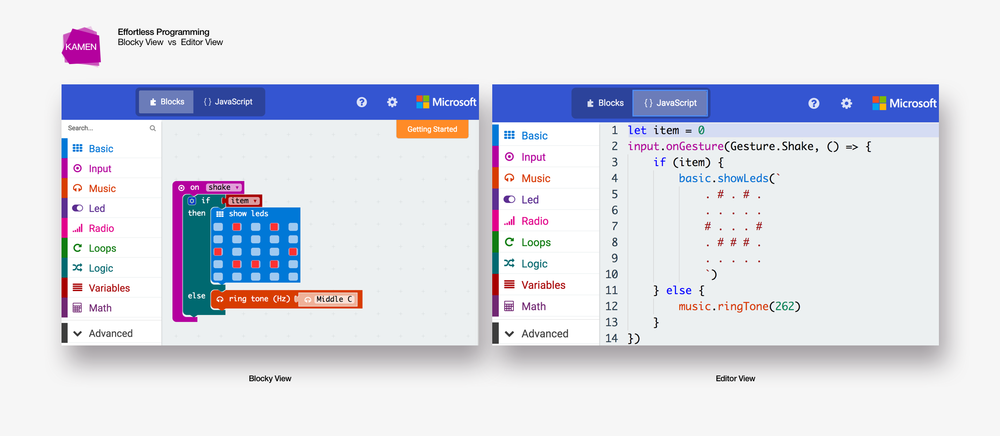

Software Engineer
UX Engineer
Requirement Analysis
Who we build for
What we want to achieve
When kids are playing with Lego blocks, they are not just simply stacking bricks. The whole process enables them to learn and understand the concept of object selection, color matching, pattern sorting, logistic training, etc. Empowered with MakeCode, this open source platform should teach user a sense of programming with JavaScript.
More importantly, as the core feature of this application, it should provide user with a diverse set of face tracking based augmented reality functions so that user could customize their own AR apps in a creative way.

More importantly, as the core feature of this application, it should provide user with a diverse set of face tracking based augmented reality functions so that user could customize their own AR apps in a creative way.
Efforless Programming
One advantage of MakeCode is that it allows user to build applications by constructing visual blocks of functions. In such a way. User does not need to know details of JavaScript semantics in order to complete a program. Aside from that. Visual blocks also gives a better view of the flow of program. Thus, it is easy to interpret the purpose of the code even for non-programmers.
Once user is more comfortable reading/writing JavaScript code, he/she could then switch from blocky view to editor view and build with actual JavaScript code.
However, even in the editor view, user would only write pseudo code to build their applications. The "dirty work" of how each API actually works is hidden from the the user's perspective. As such, we enables user to experience the actual programming flow yet keep the playground simple and clean.

Once user is more comfortable reading/writing JavaScript code, he/she could then switch from blocky view to editor view and build with actual JavaScript code.
However, even in the editor view, user would only write pseudo code to build their applications. The "dirty work" of how each API actually works is hidden from the the user's perspective. As such, we enables user to experience the actual programming flow yet keep the playground simple and clean.